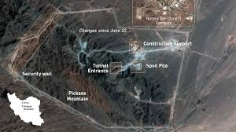

Investigația noastră indică faptul că stocul de 440 kg de uraniu înalt îmbogățit (HEU), depozitat la Isfahan și în fortăreața subterană de la Natanz (Kuh-e Kolang Gaz La), reprezintă piesa finală dintr-un puzzle letal. Conform experților militari, acest material poate fi procesat și montat pe rachete de transport din familia Shahab-3 în doar câteva luni, dacă regimul decide să „alerge” către bomba atomică.
APASĂ PENTRU SECȚIUNE
Focosul (marcat cu verde) este punctul unde stocul de HEU este convertit în metal pentru masa critică. Interacționează cu diagrama pentru a vedea poziționarea sarcinii utile.
Amenințarea de sub Munte
Locația cunoscută sub numele de „Pickaxe Mountain” (Muntele Târnăcopului) este atât de adânc îngropată în stâncă, încât doar forțele speciale la sol ar putea asigura neutralizarea materialului fără a provoca un dezastru ecologic. Donald Trump a confirmat dificultatea operațiunii, declarând că trupele vor interveni doar după ce forțele de apărare iraniene vor fi fost „decimate”.

Imaginile din satelit furnizate de Planet Labs confirmă prezența a cel puțin patru intrări în tuneluri, protejate de baterii antiaeriene și ziduri de pământ consolidate, elemente vizibile în diagrama de mai sus.
Capabilități Balistice
Cu o rază de acțiune de 2.000 km, rachetele lansate din centrul Iranului pot atinge obiective strategice majore. Această capacitate transformă stocul de uraniu dintr-o problemă locală într-o amenințare globală. Interactivitatea hărții de mai jos demonstrează vizual cum puncte precum Tel Aviv, Riad sau chiar marginea de sud-est a Europei intră în „zona roșie” a Teheranului.